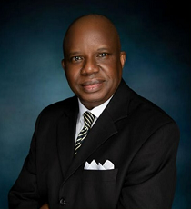
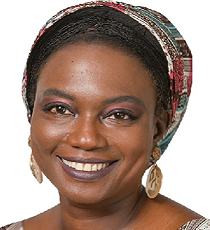
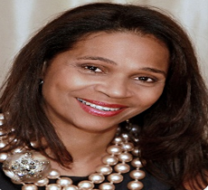
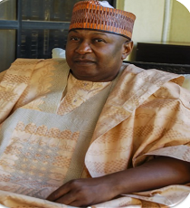

Standard Bearers School, Lekki-Lagos and the founder of iAfrica Cloud School Foundation...
She is the Executive Director of Standard Bearers School, Lekki-Lagos and the founder of iAfrica Cloud School Foundation.
Modupe is a renowned educator with almost 40 years of experience, a speaker, an author, and a tech advocate.
She has been in the teaching profession for almost four decades.
She had her BA in Fine Art in 1982 from the University of Ife, now Obafemi Awolowo University, and a Postgraduate Diploma in Education from the University of Nottingham. Her passion for education drove her to Corona School, Victoria Island Lagos where she taught for 13 years. in January 1997, over 24 years ago, she founded Standard Bearers School (SBS), a foremost nursery and primary school located in the heart of Lekki Phase 1, Lagos.
In a quest to reduce the huge number of out-of-school children in Nigeria and help children in underserved communities and low-fee-paying schools develop strong literacy skills, she founded the iAfrica Cloud School Foundation in May 2021.

Lateef Abbassi
CPA Partner
IBS Management Consultants, USA...
Mr. Abassi is a CPA Partner at IBS Management Consultants, USA.
For more than thirty years, He has provided Management Consulting Services to major corporations across the United States.
He currently heads the Public Sector Consulting Group for IBS Management Consulting. Lateef understands that education is key to the turnaround of Nigeria,
he acknowledges the brilliance of many street children he has been opportune to interact with within the South West region of Nigeria and is convinced of the efficacy of this project because the children themselves want to realize their dreams.

Aisha Mohammed Oyebode
Chief Executive Officer
Murtala Muhammed Foundation...
She is the CEO of Asset Management Group & Founder of the Murtala Muhammed Foundation.
Aisha is a development specialist, international non-governmental organization (NGO) expert, and human rights activist specializing in women and girls initiatives.
She is a member of the Chartered Institute of Arbitrators (Nigeria), and Nigerian Bar Association and is on the board of 6 other companies.
She is very passionate about the plight of the Alimajiris in Northern Nigeria.
Olusola Seriki
Executive Chairman
MVUSA Projekts Nigeria Limited...
Mr. Seriki is the Executive Chairman of MVUSA Projekts Nigeria Limited; he is a commercial real estate veteran with more than thirty years of experience developing shopping centres, office buildings, industrial warehouses, hotels, and residential projects.
Olusola is passionate about seeing the country kick start again and he is convinced that a bold initiative like iAfrica is one of the vehicles to achieve this.
He believes that the program should be supported with a comprehensive school lunch since many of the children in our target communities and across Nigeria are starving.

Funkazi Koroye-Crooks
Former Commissioner for Trades & Investment, Bayelsa State, Nigeria
Board Member, Linkage Assurance Plc....
She was formerly, a Commissioner for Trades & Investment at Bayelsa State, Nigeria.
Funkazi is on the board of Linkage Assurance Plc.
She had served as the Secretary of Petrobay Nigeria Ltd.,
Secretary & General Counsel at Bayelsa Development & Investment Corp., and Head-Africa Department at the IFPI Secretariat.
She is very passionate about education and empowerment and believes that iAfrica is on a course to harness the forgotten resources in Nigerian children.
Pastor Ituah Igudalo
Senior Pastor
Trinity House Church, Lagos...
He is a chartered accountant and the Senior Pastor of Trinity House Church, Lagos.
Pastor Ighodalo sits on the board of 12 nongovernmental organizations.
He is also the Editor-in-Chief of the Christian News, the Timeless Newspaper as well as the Timeless Business & Leadership Quarterly.
He also chairs Uni-Courage Web Media Ltd, among other businesses and organizations.
He is very much concerned with the development of the Nigerian economy and has consistently spoken widely on the need for a paradigm shift in the Nigerian education system.

Hubert Shaiyen
Chairman
Millennium Consulting, USA ...
He is the Chairman of Millennium Consulting, USA.
For more than thirty years, Mr. Shaiyen has provided public policy consulting services to government agencies, major corporations, and political bigwigs.
Hubert comes from Plateau State and has been concerned about how the activities of Boko Haram have devastated northern Nigeria which has increased the number of out-of-school children.
Remilekun Adetola Odunlami
Former Chief Risk Officer, First Bank Ltd.
Board Member, Rand Merchant Bank Board Member, NLPC Pension Fund Administrators....
Remi is the former Chief Risk Officer at First Bank Ltd.
She is also a Board Member of the Rand Merchant Bank and NLPC Pension Fund Administrators.
Valentine Nwandu, CPA
Managing Director
TAK AGRO GROUP NIGERIA...
Mr. Nwandu is the Managing Director of TAK AGRO GROUP NIGERIA.
He is a seasoned financial manager with more than 2 decades of professional experience.
He heads a major Nigerian conglomerate that has interests in fertilizer manufacturing, trucking, and agricultural equipment.
Valentine believes that iAfrica can leverage technology to emancipate underserved children from illiteracy.